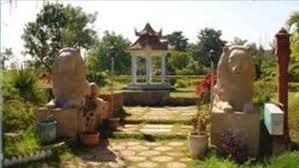

Ujjwala Park
Ujjwala Park is a well-maintained park in Karimnagar, offering a serene environment for visitors. The park features lush greenery, walking paths, playgrounds for children, and spaces for relaxation. It is a popular spot for families and individuals looking to spend some peaceful time outdoors.
Location: Karimnagar, Telangana, India
Activities: Walking, picnics, children’s play area, relaxation
Transportation: Easily accessible by road, located near major bus routes and the Karimnagar railway station.